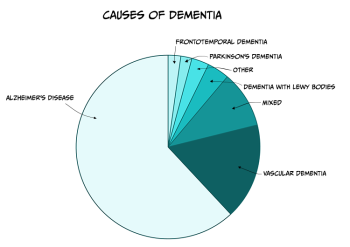
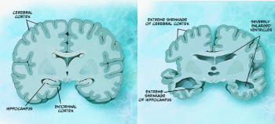
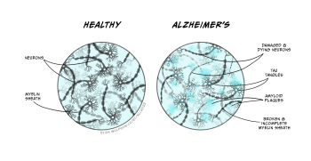
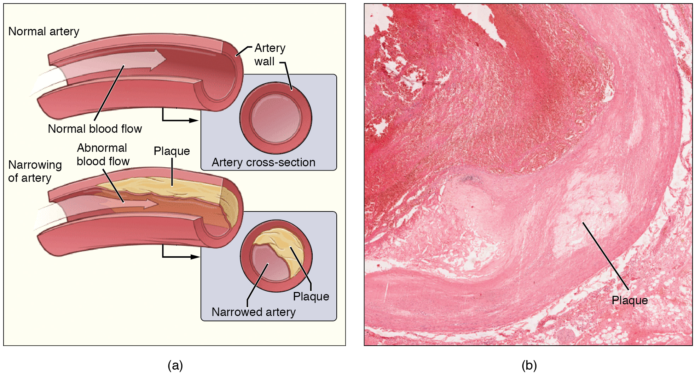

Dementias
Learning Objectives
- To gain an overview of the symptoms and main causes of dementia along with approaches used to diagnose dementia
- To understand the symptoms and pathological consequences of the main causes of dementia – focusing on Alzheimer’s disease, vascular dementia and dementia with Lewy bodies
- To gain an understanding of the various pharmacological and psychological approaches to treat Alzheimer’s disease
Dementia is a syndrome associated with a progressive decline in brain functioning, most commonly affecting memory. Symptoms of dementia can be wide-ranging and have huge individual variability which may include, but are not limited to:
- loss of memory
- apathy
- difficulties in language
- difficulties in judgement
- difficulties in motor control
- speed of (cognitive) processing
A person with dementia may also experience paranoia, hallucinations, and find it challenging to make decisions and live independently. There are currently no cures for dementia. However, depending on the type of dementia, and the underlying cause, treatments may exist which can stabilise symptoms and slow the progression of the disease.
There are many different causes of dementia (see Table 6.2) with Alzheimer’s disease (AD) being the most common (see Figure 6.11). Whilst some symptoms of dementia, such as memory loss, might be expected with the normal ageing process, dementia is a syndrome in which the deterioration in cognitive function is beyond that which might be expected from the usual consequence of biological ageing and symptoms are usually severe enough to interfere with daily activities.
Table 6.2. Common causes of dementia
|
Type of dementia |
Brief description of cause |
|
Alzheimer’s Disease |
Progressive degeneration of brain tissue |
|
Vascular Dementia |
Block or reduction in blood flow to the brain |
|
Mixed Dementia |
Several types of dementia contribute to symptoms |
|
Dementia with Lewy Bodies |
Abnormal aggregates of protein that develop inside neurons |
|
Frontotemporal Dementia |
Progressive degeneration of the temporal and frontal lobes of the brain |
|
Parkinson’s Disease with Dementia |
Development of dementia symptoms as disease progresses |
|
Other |
May include conditions such as Creutzfeld-Jacob Disease; Depression; Multiple Sclerosis, Down’s syndrome |
| Credit: Claire Gibson |
Risk factors for dementia

Although age is the strongest risk factor known for dementia it does not occur as an inevitable consequence of biological ageing. Additionally, dementia does not exclusively affect older people – young onset dementia, typically defined as onset of symptoms before the age of 65, accounts for up to 9% of all cases of dementia. There are various risk factors which have been identified to increase the risk of developing dementia, including:
- smoking
- excessive alcohol use
- low levels of physical activity
- high cholesterol
- atherosclerosis
- social isolation
- obesity
- mild cognitive impairment (MCI)
There are also a number of known genetic risk factors for developing dementia, in particular Alzheimer’s Disease (see below). It is likely that the development of dementia occurs due to a combination of various risk factors – some of which are modifiable (e.g. diet, physical activity) and some which are not (e.g. genetic).
Mild Cognitive Impairment
MCI is typically an early stage of memory loss, or other cognitive ability loss, such as language or visual/spatial perception. Individuals diagnosed with MCI are able to maintain the ability to live independently and perform most activities of daily living. Importantly, people with MCI exhibit a decline in memory and/or other cognitive areas beyond a level we would expect to see during normal ageing. MCI is not a type of dementia but it is associated with a higher risk of developing dementia, in particular AD (Boyle et al., 2006).
Alzheimer’s Disease
AD is a neurodegenerative disorder that leads to cognitive decline and memory loss. AD is characterised pathologically by the accumulation of extracellular beta amyloid (Aβ) plaques, neurofibrillary tangles, and neuroinflammation.
First described by Alois Alzheimer in 1907, AD is the most common form of dementia, accounting for between 60-80% of total dementia cases. Currently it is estimated that 30 million people worldwide have AD, which is predicted to rise to up to 90 million by 2050. In the UK there are over 500,000 people living with AD and, if the prevalence remains the same, this is forecast to rise to over 1 million by 2025 and 2 million by 2050 (Prince et al., 2014). The risk of AD increases with age affecting 1 in 20 people under the age of 65, 1 in 14 over the age of 65 and 1 in 6 over the age of 80. In England and Wales, AD was one of the leading causes of death accounting for over 10% of deaths registered in 2021 (Office of National Statistics, 2022).
There are two types of AD: early onset (familial, EOAD) or late onset (sporadic, LOAD), which are diagnosed before or after the age of 65 respectively. EOAD is rare and accounts only for up to 5% of all AD cases. It is thought to be caused by mutations in one of three genes: amyloid precursor protein (APP), presenilin 1 (PSEN1) or presenilin 2 (PSEN2), that lead to increased production of Aβ plaques. No single gene mutation is thought to be the cause of the more common LOAD, but it is suggested to be driven by a complex interplay between genetic and environmental factors. However, genetic mutations have been identified in LOAD that increase the risk of developing AD, the strongest being the apolipoprotein E4 gene (APOE4). More recently, genome-wide association studies implicate genes associated with the innate immune system and microglia (the resident immune cells of the brain), including the phagocytic receptors CD33 and TREM2 (triggering receptor expressed on myeloid cells 2) (Griciuc & Tanzi, 2021).
Symptoms
AD develops slowly over several years, sometimes decades, so the symptoms are not always obvious at first and also depend on the stage of the disease. The predominant symptoms of AD are progressive and irreversible impairment in memory and cognitive function. One of the first signs of cognitive decline in AD is the generalised disruption of declarative memory, including the inability to learn and remember new facts (semantic memory deficit) and recall past experiences (episodic memory deficit) and this is often characterised by an abnormally rapid rate of forgetfulness (Holger, 2013). Symptoms that occur early in the disease include forgetting the names of objects and places, misplacing items (losing your house keys), and repetition such as asking the same question several times. Deficits in episodic memory are one of the best indicators of early AD compared to other forms of dementia and have been reported in the pre-clinical stage of the disease.
As AD progresses, other cognitive deficits manifest, including disruptions in language (aphasia), spatial orientation (e.g. judging distances), attention and executive functions. In contrast, procedural memory (habits and skills) remains relatively unaffected until the late stages of the disease when there are significant problems with both short- and long-term memory.
AD is also associated with various behavioural and psychological symptoms including depression, anxiety, apathy, irritability, aggression, disinhibition and reduced curiosity. These changes all form part of the behavioural and psychological symptoms of dementia (BPSD), which are commonly seen in people with AD in either the early or late stages of the disease but which can fluctuate throughout its progression. Research also indicates that BPSD might contribute to cognitive decline as the disease progresses (Gottesman & Stern, 2019).
Disturbances in sleep-wake patterns are also a common feature, with people with AD displaying increased sleepiness during the day and increased wakefulness at night. AD patients often exhibit a shift in their body clock, tending to wake up later in the day and going to sleep later than non-demented controls. Similarly, circadian shifts in eating patterns are observed in people with AD who show a tendency to have their biggest meal during breakfast and display increased preference for sweet food. However, considerable weight loss is also a common symptom which can lead to frailty and weakness. Over time, the ability to perform everyday activities becomes increasingly impaired and eventually leads to permanent dependence on caregivers.
Neuropathology
Macroscopic features

Several pathological features can be seen macroscopically in the brain of someone with AD (DeTure & Dickson, 2019). These features get worse with disease progression and can be visualised using imaging (e.g. magnetic resonance imagining, MRI) and post-mortem analysis. For example, cortical atrophy (thinning), which is characterised by enlarged sulcal spaces and atrophy of the gyri, is seen prominently in the frontal and temporal cortices of people with AD. As a result of this atrophy there is a reduction in brain weight and ventricular enlargement (see Figure 6.13). The hippocampus, a crucial region for learning and memory, also shows atrophy thought to be due to neuronal loss. However, while these features suggest that someone has AD, they can sometimes be seen in other dementias and also in clinically normal people.
Microscopic features

The key neuropathological hallmarks that define AD are the presence of Aβ plaques (or senile plaques) and neurofibrillary tangles (DeTure & Dickson, 2019). It is worth noting that the presence of such plaques and tangles are not unique to AD as they are also seen during the ageing process, but the density and location are distinct in AD.
These features are initially located in temporal lobe structures e.g. hippocampus and entorhinal cortex, but can spread to other areas as the disease progresses. Aβ plaques consist of insoluble aggregates of Aβ that are found in the brain parenchyma. The genetic mutations seen in people with EOAD affect the processing of amyloid precursor protein (APP), which subsequently leads to a build-up of Aβ plaques. APP is processed by three enzyme complexes known as α, β and γ secretase. APP is normally cleaved by α-secretase then γ-secretase but, in people with EOAD, APP is processed by β- and γ-secretase which results in different species Aβ being produced that are far more prone to aggregation.
The other characteristic sign in AD is the presence of neurofibrillary tangles composed of hyperphosphorylated tau. Normally, tau’s role is to regulate elements of the microtubule cytoskeleton such as stabilisation and facilitation of axonal transport. In AD, tau becomes hyperphosphorylated and forms neurofibrillary tangles inside neurons. This disturbs microtubule structure causing major problems in the neuronal function and ultimately leads to neuronal cell death.
Other features of AD pathology include synaptic loss that precedes neuronal loss and strongly correlates with cognitive decline (Terry et al., 1991). There is also an inflammatory response that is observed in the brains of people with AD, including microglia and astrocyte activation around Aβ plaques that is thought to contribute to disease pathogenesis.
Diagnosis
Currently there is no simple and reliable test for diagnosing AD. If a person is suspected to have AD, their cognitive ability will be evaluated using tests that assess memory, concentration and attention, language and communication skills, orientation, and visual and spatial abilities.
The most commonly used test to measure cognitive impairment is the Mini Mental State Exam (MMSE), which was first introduced in 1975 by Marshal Folstein and colleagues. The MMSE is a 30-point assessment involving a series of questions and tests that each score points if answered correctly. Specifically, the MMSE test measures short-term memory (e.g. memorising an address and recalling it a few minutes later), attention and concentration (e.g. spelling a simple word backwards), language (e.g. identifying common objects by name), orientation to time and place (e.g. knowing where you are, and the day of the week) and comprehension and motor skills (drawing a slightly complicated shape such as copying a pair of intersecting pentagons). Scores of 24 or higher generally indicate normal cognition, while scores below this can indicate mild (19-23), moderate (10-18) or severe (9) cognitive impairment. The MMSE can therefore be used to indicate how severe a person’s symptoms are, but if repeated it can assess changes in cognitive ability and how quickly their AD is progressing. The onset of cognitive symptoms indicates severe neurodegeneration has already taken place and diagnosis at an earlier stage is therefore needed.
Furthermore, while cognitive impairment is a symptom of AD, several other conditions associated with dementia (e.g. vascular dementia) can lead to cognitive decline and a reduction in MMSE score, so in order to determine the likelihood of AD, patients might also undergo a brain scan. Neuroimaging techniques such as MRI have dramatically advanced the ability to diagnose people with AD at an earlier stage (Kim et al., 2022). Structural MRI is used to detect changes in brain structure such as cerebral atrophy and ventricular enlargement. Positron emission tomography (PET) imaging can detect other characteristic hallmarks of AD such as brain hypometabolism, characterised by decreased brain glucose consumption, and Aβ burden, but these types of scans are more commonly used in research rather than as a clinical diagnostic tool.
Treatments
Despite large scientific research efforts, there is no cure for AD and treatment options are limited with a few pharmacological treatments and non-pharmacological interventions available. Examples of non-pharmacological therapies to improve memory, problem-solving skills, mood and wellbeing include cognitive stimulation therapy, cognitive rehabilitation and reminiscence/life story work (see insert box). In the UK there are four pharmacological treatments licenced for AD. These include three acetylcholinesterase (AChE) inhibitors donepezil (Aricept), rivastigmine (Exelon) and galantamine (Reminyl) and the N-methyl-D-aspartate (NMDA) receptor antagonist memantine (Namenda). However, these drugs only provide symptomatic effects by reducing the severity of common cognitive symptoms, and while they can increase the quality of life, they do not alter the course and progression of the disease. There are also some drugs that might be prescribed for the symptoms of BPSD including the antipsychotic medicines risperidone or haloperidol or antidepressants if depression is suspected as a cause of anxiety. While there are no disease-modifying treatments licenced in the UK, in 2021 the United States Food and Drug Administration (FDA) approved the use of aducanumab (Aduhelm), a monoclonal antibody designed to bind and eliminate aggregated Ab for treatment in AD, although there are still uncertainties around the benefits it may bring. Therefore, effective interventions to halt or reverse the neurodegeneration seen in AD are still needed.
Psychological approaches for dementia
Psychological approaches are aimed at improving cognitive abilities (e.g. cognitive training/stimulation), enhancing emotional well-being (e.g. activity planning, reminiscence therapy), reducing behavioural symptoms (e.g. music therapy) and promoting everyday functioning (e.g. occupational therapy). Whilst such approaches do not prevent or delay the progression of the underlying cause of dementia, they can improve the quality of life for the patient and their caregivers (Logsdon et al., 2007; Woods et al., 2018). Some specific examples:
- Cognitive Training/Stimulation – adapted from rehabilitation programmes designed for individuals with neurological disorders (e.g. stroke, traumatic brain injury) its goal is to improve memory, attention and general cognitive function. It typically involves strategies such as memory training, general problem solving (including games and puzzles), use of mnemonic devices and/or use of external memory aids such as notebooks, calendars.
- Reminiscence Therapy – involves discussing events and experiences from an individual’s past aiming to stimulate memories, mental activity and improve well-being. It is usually supported by external aids such as photographs, music, objects and may involve direct discussion with the individual or involve a wider family or social group.
- Music/Art Therapy – aimed at improving the mood, alertness and engagement of individuals with dementia. Through engagement with music and/or art this can help trigger memories, stimulate communication and build confidence – all of which impact positively on the quality of life for individuals with dementia. This type of approach allows for self-expression and engagement of individuals which has been shown to reduce agitation and distressing behaviour.
Cholinesterase inhibitors
Acetylcholine (ACh) is a neurotransmitter produced in cholinergic neurones that has a role in memory, thinking, language and attention. In AD there is a loss of cholinergic neurones particularly in the hippocampus, cortex and amygdala, which leads to a reduction in ACh. The enzyme AChE breaks down ACh, and AChE inhibitors (donepezil, rivastigmine, and galantamine) are therefore believed to treat the cognitive symptoms of AD by increasing the levels of ACh in the brain. These drugs are used treat the symptoms of mild to moderate AD and can lead to an improvement in thinking, memory, communication or day-to-day activities. In some people a noticeable improvement is not seen, but their symptoms do not worsen as quickly as expected. Some common side-effects of AChE inhibitors are diarrhoea, feeling or being sick, trouble sleeping, muscle cramps and tiredness.
Memantine
Memantine is the most recent drug to be approved for the treatment of AD in the UK. Pharmacologically, it is a non-competitive antagonist of the NMDA receptor. In AD, NMDA receptor over-activity due to an excess of glutamate is thought to result in neuronal cell death as well as calcium-dependent neurotoxicity, therefore memantine is thought to prevent these toxic effects of glutamate and reduce the symptoms of AD. Memantine is recommended for people with severe AD, or those with moderate AD who are unable to use AChE inhibitors, but is often used in combination with these drugs. Common side effects include drowsiness, dizziness, constipation, headaches and shortness of breath.
Vascular dementia
Vascular dementia is the second commonest cause of dementia after AD and it occurs as a consequence of reduced blood flow to the brain. All cells within the brain require a constant supply of oxygen and nutrients in order to function and these are delivered via the blood supply within the brain’s vascular network. Any interruption or reduction in the blood flow within the brain, for example as a consequence of stroke, can result in impaired function of brain cells, cell death and disruption of cognitive and motor processes.
Symptoms occurring following vascular dementia tend to vary quite considerably between individuals as they depend on the location of the damage and symptoms may develop suddenly, for example following a stroke, or more gradually, such as with small vessel disease. Some symptoms of vascular dementia may be similar to those of other types of dementia – however, although memory loss is typical of the early stages of AD, it is not usually the main early symptom of vascular dementia. The most common cognitive symptoms in the early stages of vascular dementia include problems with planning/organising and decision making, slower speed of cognitive processing, inattention and short periods of confusion. There are three main types of vascular dementia:
- Subcortical vascular dementia – reported to be the most common type of vascular dementia, occurs as a consequence of disease of the very small arteries that lie within subcortical regions of the brain and is termed small vessel disease (Tomimoto, 2011). Over time, the walls of these vessels thicken and therefore the vessel lumen narrows leading to reduced blood flow (Figure 6.14) and subsequent areas of brain damage termed ‘infarcts’ are produced. Subcortical structures of the brain are important for processing complex activities such as memory and emotions. It can be distinguished from AD because it is associated with more extensive white matter infarcts and less severe atrophy of the hippocampus.
- Multi-infarct dementia – occurs when an individual experiences a series of mini-strokes, which are sometimes referred to as a transient ischemic attacks. Such mini-strokes cause a temporary reduction in blood flow to the brain and whilst the patient may only experience temporary symptoms at the point of experiencing the mini-stroke they can result in generation of infarcts. Over time, if a number of infarcts develop then the cumulative damage may be sufficient for the individual to develop symptoms of dementia (McKay and Counts, 2017).
- Post-stroke dementia – about 20% of individuals who experience an ischaemic stroke will develop dementia within the following 6 months. An ischaemic stroke is caused by the presence of a clot in a blood vessel which reduces blood flow within that cerebral blood vessel, resulting in tissue loss and brain dysfunction (Mijajlović et al., 2017). Factors which increase the risk of cardiovascular disease and ischaemic stroke, such as hypertension and high cholesterol, also increase the risk of cognitive decline post-stroke.

Dementia with Lewy Bodies
Dementia with Lewy bodies (DLB) is a progressive disease associated with abnormal deposits of a protein called alpha-synuclein in neuronal and non-neuronal cells within the brain (Outerio et al., 2019). These deposits, termed Lewy bodies, named after FH Lewy, the German doctor who first identified them, affect neurotransmitter functioning, in particular ACh and dopamine, which in turn disrupts cognitive functioning, movement, behaviour, and mood. DLB causes a range of symptoms, some of which are shared with AD and some with Parkinson’s disease, resulting in DLB being commonly wrongly diagnosed (see insert box for methods used to diagnose dementia). However, symptoms more commonly associated with DLB rather than other causes of dementia include sleep disturbances, visual hallucinations and motor symptoms. Having a family member with DLB also may increase a person’s risk, though LBD is not considered a genetic disease. Variants in three genes, APOE, synuclein alpha (SNCA) and glucocerebrosidase (GBA), have been associated with an increased risk, but for the majority of DLB cases, the cause is unknown.
Testing for dementia
There is no single test for dementia but medical doctors use information from a variety of approaches (listed below) to determine if an individual is experiencing dementia and, if so, what the underlying cause is. Understanding the underlying cause of a patient’s dementia is important as it will inform treatment approaches and determine the likely progression of the disease and associated symptoms.
- Medical history to ascertain how any symptoms are affecting daily life along with ensuring any other existing medical conditions (e.g. hypertension) are being treated appropriately.
- Tests of cognitive ability – typically involve neuropsychological tests of memory, attention, problem solving and awareness of time and place.
- Blood tests to check for other conditions which may be causing symptoms which mimic those seen in dementia. Such tests may typically check the function of the liver, kidneys and thyroid.
- Brain scans can detect signs of brain damage which may help identify the underlying cause of dementia. For example, MRI scans can provide more detailed information about blood vessel damage that might indicate vascular dementia or show atrophy in specific brain areas. For example, hippocampal atrophy is a strong indicator of AD whereas atrophy in the frontal and temporal lobes are more typical of frontotemporal dementia. Other types of scan, e.g. CT scan, may be used to rule out the presence of a brain tumour. Clinical research studies tend to use scans more, such as a PET scan, to identify markers of interest e.g. glucose, in specific relation to disease progression and/or evaluation of potential new therapeutics. It is likely the majority of individuals will not receive a brain scan if the various other tests and assessments show that dementia is a likely diagnosis.
Other dementias
Mixed dementia may be diagnosed when a person has more than one underlying cause of dementia – most commonly this would be co-occurrence of AD and vascular dementia, although other possible combinations are possible such as AD and DLB. Mixed dementia tends to be more common in older age groups (over 75 years of age), and is reported to account for 10% of all dementia diagnoses.
Frontotemporal dementia (FTD) is a rare form of dementia sometimes referred to as Pick’s disease or frontal lobe dementia. It typically occurs at a younger age than other forms of dementia, with 60% of cases occurring in people aged 45 to 64 years old. FTD occurs as a consequence of selective degeneration within the frontal and temporal lobes. In the early stages of FTD individuals tend to display changes to their personality and behaviour and/or aphasia. Aphasia is when a person has difficulty with their language or speech and in FTD is usually caused by damage to the left temporal lobe. Compared to disorders such as AD patients with FTD tend to have good memory performance in the early stages although this does become progressively worse as the disease progresses.
Key Takeaways
- Dementia is a complex syndrome with different underlying causes and huge variability in symptom presentation
- Symptoms associated with dementia typically involve cognitive processes, in particular memory, but can also affect other behaviours, motor control, sleep and mood
- There are no cures for dementia which is progressive and symptoms worsen over time. However, some of the more common causes of dementia, i.e. AD, do have treatments which have been shown to be effective in slowing and stabilising the progression of symptoms
- Psychological approaches for dementia are also important as they have been demonstrated to improve wellbeing and quality of life not only for the patient but also for those involved in caring for dementia patients
- A huge amount of research is invested in further understanding the pathology underlying dementia and identifying novel treatment approaches.
References
Boyle, P.A., Wilson, R.S., Aggarwal, N.T., Tang, T., & Bennett, D. A. (2006). Mild cognitive impairment: Risk of Alzheimer disease and rate of cognitive decline. Neurology, 67(3), 441-445. https://doi.org/10.1212/01.wnl.0000228244.10416.20
DeTure, M.A., & Dickson, D.W. (2019). The neuropathological diagnosis of Alzheimer’s disease. Molecular Neurodegeneration, 14(32), 1-18. https://doi.org/10.1186/s13024-019-0333-5
Gottesman, R.T., & Stern, Y. (2019). Behavioral and psychiatric symptoms of dementia and rate of decline in Alzheimer’s disease. Frontiers in Pharmacology, 10, 1062. https://doi.org/10.3389/fphar.2019.01062
Griciuc, A., & Tanzi, R.E. (2021). The role of innate immune genes in Alzheimer’s disease. Current Opinion in Neurology, 34(2), 228-236. https://doi.org/10.1097/wco.0000000000000911
Holger, J. (2013). Memory loss in Alzheimer’s disease. Dialogues Clinical Neuroscience, 15(4), 445-454. https://doi.org/10.31887%2FDCNS.2013.15.4%2Fhjahn
Kim, J., Jeong, M., Stiles, W.R., & Choi, H.S. (2022). Neuroimaging modalities in Alzheimer’s disease: Diagnosis and clinical features. International Journal of Molecular Sciences, 23(11), 6079. https://doi.org/10.3390/ijms23116079
Logsdon, R.G., McCurry, S.M., & Teri, L. (2007) Evidence-based interventions to improve quality of life for individuals with dementia. Alzheimer’s care today, 8(4), 309-318. https://www.ncbi.nlm.nih.gov/pmc/articles/PMC2585781/
McKay, E., & Counts, S.E. (2017) Multi-infarct dementia: A historical perspective. Dementia and Geriatric Cognitive Disorders Extra, 7, 160-171. https://doi.org/10.1159/000470836
Mijajlović, M.D., Pavlović, A., Brainin M., Heiss, W.-D., Quinn, T.J., & Ihle-Hansen, H.B. (2017) Post-stroke dementia – a comprehensive review. BMC Medicine, 15(11), 1-12. https://doi.org/10.1186/s12916-017-0779-7
Office of National Statistics (2022, July 1). Deaths Registered in England and Wales, 2021. https://www.ons.gov.uk/peoplepopulationandcommunity/birthsdeathsandmarriages/deaths/bulletins/deathsregistrationsummarytables/2021
Outeiro, T.F., Koss D.J., Erskine, D., Walker, L., Kurzawa-Akanbi, M., & Burn, D. (2019) Dementia with Lewy bodies: an update and outlook. Molecular Neurodegeneration, 14(5), 1-18. https://doi.org/10.1186/s13024-019-0306-8
Prince, M., Knapp, M., Guerchet, M., McCrone, P., Prina, M., Comas-Herrera, M., Wittenberg, A., Adelaja, R., Hu, B., King, B., Rehill, D., & Salimkumar, D. (2014). Dementia UK: Update. Alzheimer’s Society. http://www.alzheimers.org.uk/dementiauk
Terry, R.D., Masliah, E., Salmon, D.P., Butters, N., DeTeresa, R., Hill, R., Hansen, L.A., & Katzman, R. (1991). Physical basis of cognitive alterations in Alzheimer’s disease: synapse loss is the major correlate of cognitive impairment. Annals of Neurology, 30(4), 572–80. https://doi.org/10.1002/ana.410300410
Tomimoto, H. (2011). Subcortical vascular dementia. Neuroscience Research, 71(3), 193-199. https://doi.org/10.1016/j.neures.2011.07.1820
Woods, B., O’Philbin, L., Farrell, E.M., Spector, A.E., & Orrell, M. (2018) Reminiscence therapy for dementia. Cochrane Database of Systematic Reviews, 3, CD001120. https://doi.org/10.1002%2F14651858.CD001120.pub3
a group of related symptoms